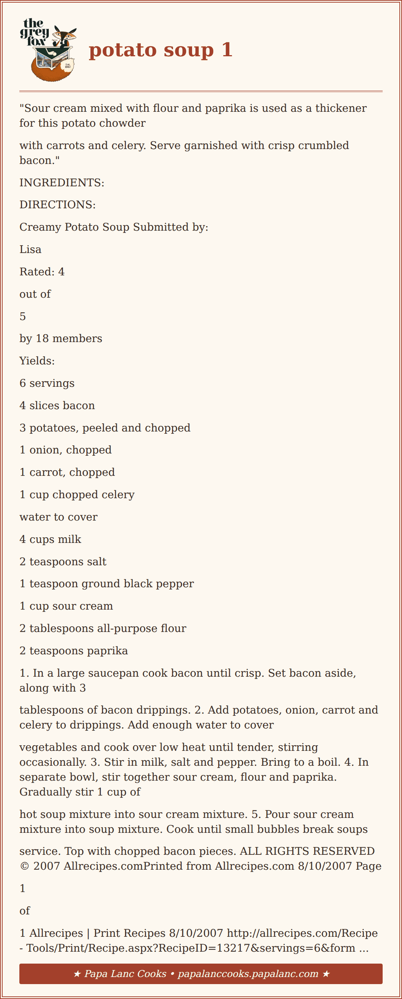

WELCOME
"Sour cream mixed with flour and paprika is used as a thickener for this potato chowder
with carrots and celery. Serve garnished with crisp crumbled bacon."
INGREDIENTS:
DIRECTIONS:
Creamy Potato Soup Submitted by:
Lisa
Rated: 4
out of
5
by 18 members
Yields:
6 servings
4 slices bacon
3 potatoes, peeled and chopped
1 onion, chopped
1 carrot, chopped
1 cup chopped celery
water to cover
4 cups milk
2 teaspoons salt
1 teaspoon ground black pepper
1 cup sour cream
2 tablespoons all-purpose flour
2 teaspoons paprika
1. In a large saucepan cook bacon until crisp. Set bacon aside, along with 3
tablespoons of bacon drippings. 2. Add potatoes, onion, carrot and celery to drippings. Add enough water to cover
vegetables and cook over low heat until tender, stirring occasionally. 3. Stir in milk, salt and pepper. Bring to a boil. 4. In separate bowl, stir together sour cream, flour and paprika. Gradually stir 1 cup of
hot soup mixture into sour cream mixture. 5. Pour sour cream mixture into soup mixture. Cook until small bubbles break soups
service. Top with chopped bacon pieces. ALL RIGHTS RESERVED © 2007 Allrecipes.comPrinted from Allrecipes.com 8/10/2007 Page
1
of
1 Allrecipes | Print Recipes 8/10/2007 http://allrecipes.com/Recipe - Tools/Print/Recipe.aspx?RecipeID=13217&servings=6&form ...

WELCOME
Converted from the original file for viewing — open/download the original to edit it.